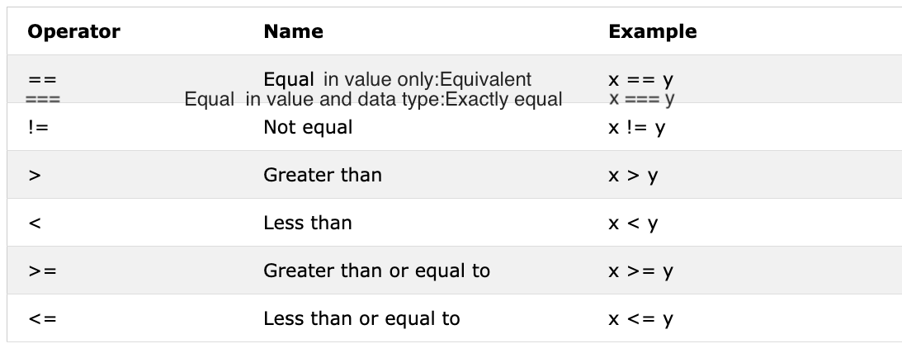

A boolean data type represents one of the two values:true or false. Boolean value is either true or false. The use of these data types will be clear when you start the comparison operator. Any comparisons return a boolean value which is either true or false.
Example: Boolean Values
let isLightOn = true
let isRaining = false
let isHungry = false
let isMarried = true
let truValue = 4 > 3 // true
let falseValue = 4 < 3 // false
We agreed that boolean values are either true or false.
It is good to remember those truthy values and falsy values. In later section, we will use them with conditions to make decisions.
If we declare a variable and if we do not assign a value, the value will be undefined. In addition to this, if a function is not returning the value, it will be undefined.
let firstName
console.log(firstName) //not defined, because it is not assigned to a value yet
let empty = null
console.log(empty) // -> null , means no value
An equal sign in JavaScript is an assignment operator. It uses to assign a variable.
let firstName = 'Asabeneh'
let country = 'Finland'
Assignment Operators

Arithmetic operators are mathematical operators.
let numOne = 4
let numTwo = 3
let sum = numOne + numTwo
let diff = numOne - numTwo
let mult = numOne * numTwo
let div = numOne / numTwo
let remainder = numOne % numTwo
let powerOf = numOne ** numTwo
console.log(sum, diff, mult, div, remainder, powerOf) // 7,1,12,1.33,1, 64
const PI = 3.14
let radius = 100 // length in meter
//Let us calculate area of a circle
const areaOfCircle = PI * radius * radius
console.log(areaOfCircle) // 314 m
const gravity = 9.81 // in m/s2
let mass = 72 // in Kilogram
// Let us calculate weight of an object
const weight = mass * gravity
console.log(weight) // 706.32 N(Newton)
const boilingPoint = 100 // temperature in oC, boiling point of water
const bodyTemp = 37 // body temperature in oC
// Concatenating string with numbers using string interpolation
/*
The boiling point of water is 100 oC.
Human body temperature is 37 oC.
The gravity of earth is 9.81 m/s2.
*/
console.log(
`The boiling point of water is ${boilingPoint} oC.\nHuman body temperature is ${bodyTemp} oC.\nThe gravity of earth is ${gravity} m / s2.`
)
In programming we compare values, we use comparison operators to compare two values. We check if a value is greater or less or equal to other value.
 Example: Comparison Operators
console.log(3 > 2) // true, because 3 is greater than 2
console.log(3 >= 2) // true, because 3 is greater than 2
console.log(3 < 2) // false, because 3 is greater than 2
console.log(2 < 3) // true, because 2 is less than 3
console.log(2 <= 3) // true, because 2 is less than 3
console.log(3 == 2) // false, because 3 is not equal to 2
console.log(3 != 2) // true, because 3 is not equal to 2
console.log(3 == '3') // true, compare only value
console.log(3 === '3') // false, compare both value and data type
console.log(3 !== '3') // true, compare both value and data type
console.log(3 != 3) // false, compare only value
console.log(3 !== 3) // false, compare both value and data type
console.log(0 == false) // true, equivalent
console.log(0 === false) // false, not exactly the same
console.log(0 == '') // true, equivalent
console.log(0 == ' ') // true, equivalent
console.log(0 === '') // false, not exactly the same
console.log(1 == true) // true, equivalent
console.log(1 === true) // false, not exactly the same
console.log(undefined == null) // true
console.log(undefined === null) // false
console.log(NaN == NaN) // false, not equal
console.log(NaN === NaN) // false
console.log(typeof NaN) // number
console.log('mango'.length == 'avocado'.length) // false
console.log('mango'.length != 'avocado'.length) // true
console.log('mango'.length < 'avocado'.length) // true
console.log('milk'.length == 'meat'.length) // true
console.log('milk'.length != 'meat'.length) // false
console.log('tomato'.length == 'potato'.length) // true
console.log('python'.length > 'dragon'.length) // false
Try to understand the above comparisons with some logic. Remembering without any logic might be difficult. JavaScript is somehow a wired kind of programming language. JavaScript code run and give you a result but unless you are good at it may not be the desired result.
As rule of thumb, if a value is not true with == it will not be equal with ===. Using === is safer than using ==. The following link has an exhaustive list of comparison of data types.
The following symbols are the common logical operators: &&(ampersand) , ||(pipe) and !(negation). The && operator gets true only if the two operands are true. The || operator gets true either of the operand is true. The ! operator negates true to false and false to true.
// && ampersand operator example
const check = 4 > 3 && 10 > 5 // true && true -> true
const check = 4 > 3 && 10 < 5 // true && false -> false
const check = 4 < 3 && 10 < 5 // false && false -> false
// || pipe or operator, example
const check = 4 > 3 || 10 > 5 // true || true -> true
const check = 4 > 3 || 10 < 5 // true || false -> true
const check = 4 < 3 || 10 < 5 // false || false -> false
//! Negation examples
let check = 4 > 3 // true
let check = !(4 > 3) // false
let isLightOn = true
let isLightOff = !isLightOn // false
let isMarried = !false // true
In JavaScript we use the increment operator to increase a value stored in a variable. The increment could be pre or post increment. Let us see each of them:
let count = 0
console.log(++count) // 1
console.log(count) // 1
let count = 0
console.log(count++) // 0
console.log(count) // 1
We use most of the time post-increment. At least you should remember how to use post-increment operator.
In JavaScript we use the decrement operator to decrease a value stored in a variable. The decrement could be pre or post decrement. Let us see each of them:
let count = 0
console.log(--count) // -1
console.log(count) // -1
let count = 0
console.log(count--) // 0
console.log(count) // -1
Ternary operator allows to write a condition. Another way to write conditionals is using ternary operators. Look at the following examples:
let isRaining = true
isRaining
? console.log('You need a rain coat.')
: console.log('No need for a rain coat.')
isRaining = false
isRaining
? console.log('You need a rain coat.')
: console.log('No need for a rain coat.')
You need a rain coat.
No need for a rain coat.
let number = 5
number > 0
? console.log(`${number} is a positive number`)
: console.log(`${number} is a negative number`)
number = -5
number > 0
? console.log(`${number} is a positive number`)
: console.log(`${number} is a negative number`)
5 is a positive number
-5 is a negative number
I would like to recommend you to read about operator precedence from this link
As you have seen at very beginning alert() method displays an alert box with a specified message and an OK button. It is a builtin method and it takes on argument.
alert(message)
alert('Welcome to 30DaysOfJavaScript')
Do not use too much alert because it is destructing and annoying, use it just to test.
The window prompt methods display a prompt box with an input on your browser to take input values and the input data can be stored in a variable. The prompt() method takes two arguments. The second argument is optional.
prompt('required text', 'optional text')
let number = prompt('Enter number', 'number goes here')
console.log(number)
The confirm() method displays a dialog box with a specified message, along with an OK and a Cancel button. A confirm box is often used to ask permission from a user to execute something. Window confirm() takes a string as an argument. Clicking the OK yields true value, whereas clicking the Cancel button yields false value.
const agree = confirm('Are you sure you like to delete? ')
console.log(agree) // result will be true or false based on what you click on the dialog box
These are not all the window methods we will have a separate section to go deep into window methods.
Time is an important thing. We like to know the time a certain activity or event. In JavaScript current time and date is created using JavaScript Date Object. The object we create using Date object provides many methods to work with date and time.The methods we use to get date and time information from a date object values are started with a word get because it provide the information. getFullYear(), getMonth(), getDate(), getDay(), getHours(), getMinutes, getSeconds(), getMilliseconds(), getTime(), getDay()

Once we create time object. The time object will provide information about time. Let us create a time object
const now = new Date()
console.log(now) // Sat Jan 04 2020 00:56:41 GMT+0200 (Eastern European Standard Time)
We have created a time object and we can access any date time information from the object using the get methods we have mentioned on the table.
Let's extract or get the full year from a time object.
const now = new Date()
console.log(now.getFullYear()) // 2020
Let's extract or get the month from a time object.
const now = new Date()
console.log(now.getMonth()) // 0, because the month is January, month(0-11)
Let's extract or get the date of the month from a time object.
const now = new Date()
console.log(now.getDate()) // 4, because the day of the month is 4th, day(1-31)
Let's extract or get the day of the week from a time object.
const now = new Date()
console.log(now.getDay()) // 6, because the day is Saturday which is the 7th day
// Sunday is 0, Monday is 1 and Saturday is 6
// Getting the weekday as a number (0-6)
Let's extract or get the hours from a time object.
const now = new Date()
console.log(now.getHours()) // 0, because the time is 00:56:41
Let's extract or get the minutes from a time object.
const now = new Date()
console.log(now.getMinutes()) // 56, because the time is 00:56:41
Let's extract or get the seconds from a time object.
const now = new Date()
console.log(now.getSeconds()) // 41, because the time is 00:56:41
This method give time in milliseconds starting from January 1, 1970. It is also know as Unix time. We can get the unix time in two ways:
const now = new Date() //
console.log(now.getTime()) // 1578092201341, this is the number of seconds passed from January 1, 1970 to January 4, 2020 00:56:41
const allSeconds = Date.now() //
console.log(allSeconds) // 1578092201341, this is the number of seconds passed from January 1, 1970 to January 4, 2020 00:56:41
const timeInSeconds = new Date().getTime()
console.log(allSeconds == timeInSeconds) // true
Let us format these values to a human readable time format. Example:
const now = new Date()
const year = now.getFullYear() // return year
const month = now.getMonth() + 1 // return month(0 - 11)
const date = now.getDate() // return date (1 - 31)
const hours = now.getHours() // return number (0 - 23)
const minutes = now.getMinutes() // return number (0 -59)
console.log(`${date}/${month}/${year} ${hours}:${minutes}`) // 4/1/2020 0:56
🌕 You have boundless energy. You have just completed day 3 challenges and you are three steps a head in to your way to greatness. Now do some exercises for your brain and for your muscle.
Declare firstName, lastName, country, city, age, isMarried, year variable and assign value to it and use the typeof operator to check different data types.
Check if type of '10' is equal to 10
Check if parseInt('9.8') is equal to 10
Boolean value is either true or false.
Figure out the result of the following comparison expression first without using console.log(). After you decide the result confirm it using console.log()
Figure out the result of the following expressions first without using console.log(). After you decide the result confirm it by using console.log()
Use the Date object to do the following activities
Write a script that prompt the user to enter base and height of the triangle and calculate an area of a triangle (area = 0.5 x b x h).
Enter base: 20
Enter height: 10
The area of the triangle is 100
Write a script that prompt the user to enter side a, side b, and side c of the triangle and and calculate the perimeter of triangle (perimeter = a + b + c)
Enter side a: 5
Enter side b: 4
Enter side c: 3
The perimeter of the triangle is 12
Get length and width using prompt and calculate an area of rectangle (area = length x width and the perimeter of rectangle (perimeter = 2 x (length + width))
Get radius using prompt and calculate the area of a circle (area = pi x r x r) and circumference of a circle(c = 2 x pi x r) where pi = 3.14.
Calculate the slope, x-intercept and y-intercept of y = 2x -2
Slope is m = (y2-y1)/(x2-x1). Find the slope between point (2, 2) and point(6,10)
Compare the slope of above two questions.
Calculate the value of y (y = x2 + 6x + 9). Try to use different x values and figure out at what x value y is 0.
Writ a script that prompt a user to enter hours and rate per hour. Calculate pay of the person?
Enter hours: 40
Enter rate per hour: 28
Your weekly earning is 1120
If the length of your name is greater than 7 say, your name is long else say your name is short.
Compare your first name length and your family name length and you should get this output.
let firstName = 'Asabeneh'
let lastName = 'Yetayeh'
Your first name, Asabeneh is longer than your family name, Yetayeh
Declare two variables myAge and yourAge and assign them initial values and myAge and yourAge.
let myAge = 250
let yourAge = 25
I am 225 years older than you.
Using prompt get the year the user was born and if the user is 18 or above allow the user to drive if not tell the user to wait a certain amount of years.
Enter birth year: 1995
You are 25. You are old enough to drive
Enter birth year: 2005
You are 15. You will be allowed to drive after 3 years.
Write a script that prompt the user to enter number of years. Calculate the number of seconds a person can live. Assume some one lives just hundred years
Enter number of years you live: 100
You lived 3153600000 seconds.
Create a human readable time format using the Date time object